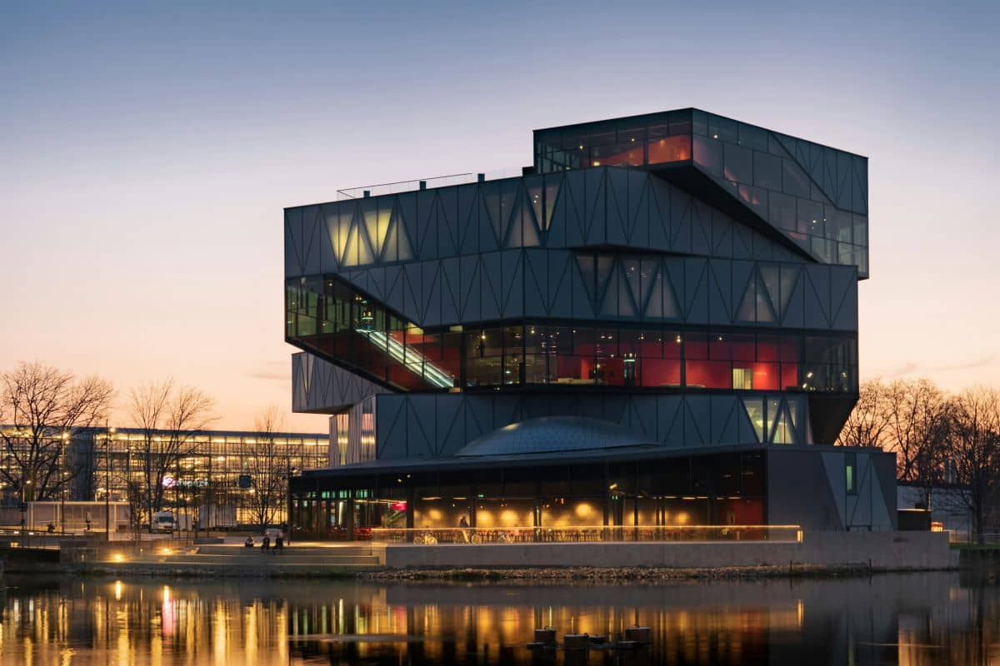

Plan Your Visit

Opening Hours
Tuesday – Sunday
10:00 – 18:00
Monday
Closed
Admission
Adults: 150 NOK
Students: 100 NOK
Children: 80 NOK
Children under 5: Free
Companion cards accepted.
Spectrum proudly supports the Hidden Disabilities Sunflower.
We offer:
- Quiet zones
- Soft lighting in selected areas
- Reduced-noise spaces
- Accessible pathways
- Companion card admission
Every visitor should feel welcome, comfortable and included.
Schools and Groups
Schools, special education schools and organised groups can book free admission tickets.
Educational visits can be adapted to different learning styles and support needs.
Getting Here
Spectrum Discovery CenterOslo, Norway
Easy access by public transport and parking available nearby.
Frequently Asked Questions
- Do I need to book in advance?
- Booking is recommended during weekends and holidays.
- Is the museum wheelchair accessible?
- Yes, all public areas are fully accessible.
- Can I bring food?
- Yes, designated picnic and dining areas are available
WHY VISIT SPECTRUM?
Interactive Learning
Hands-on exhibits that make science fun and engaging for all ages.
Inspiring Discovery
Explore science, technology and innovation through exciting exhibits.
Inclusive for Everyone
Accessible experiences designed to welcome visitors of all abilities.
Stay Connected
Follow us for the latest exhibitions,
events, and educational activites.
✉ info@spectrummuseum.com
▣ Facebook | Instagram | YouTube